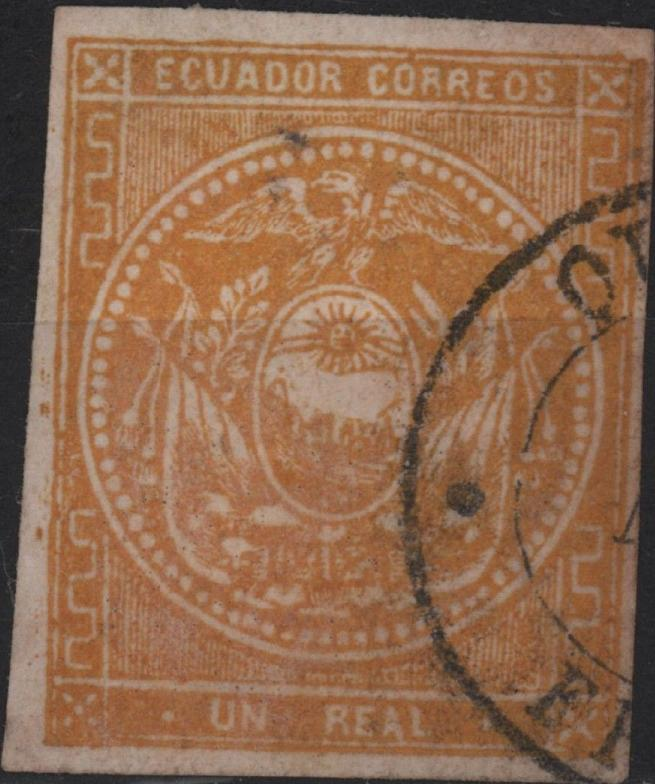
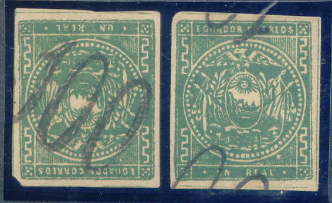
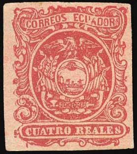
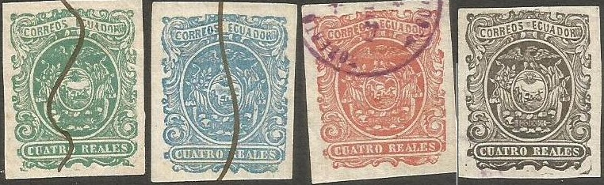
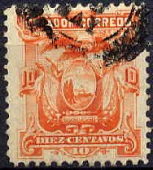

Return To Catalogue - Equador 1896-1920 and miscellaneous
Note: on my website many of the
pictures can not be seen! They are of course present in the
catalogue;
contact me if you want to purchase it.
1/2 (medio) r blue 1 r (un) green (for inland use only) 1 r (un) yellow (for use to foreign countries)
Value of the stamps |
|||
vc = very common c = common * = not so common ** = uncommon |
*** = very uncommon R = rare RR = very rare RRR = extremely rare |
||
| Value | Unused | Used | Remarks |
| 1/2 r | * | * | Fiscally used: c |
| 1 r green | *** | *** | Fiscally used: * |
| 1 r yellow | * | * | |

A stamp with the "3154" numeral cancel of Quito (here
in red color).

Ten pointed star with "P I" inside it (badly visible on
the first stamp) for "Porte Interior"

I've been told that the above stamp is a reprint made from retouched original plates (probably the Rivadeneira reprints). Reprints exist of all values and are not very rare.

(Primitive forgery with the side ornaments different; not enough
loops). These have a "CORREOS 6.2" cancel very similar
to a forged "CORREOS 7.1.60"
cancel found on many other forgeries.
(Forgeries with a very large 'flag' on the ship)
Spiro(?) forgeries:
I think the above forgeries are made by Spiro. Usually they have a cancel consisting of dots or lines. Fournier also offers these stamps in his 1914 pricelist (3 values together for 1 Swiss Franc as second choice forgeries). These forgeries were also included in 'The Fournier Album of Philatelic Forgeries'. In my opinion, the line pattern in the left hand bottom side ends too high and this pattern at the right hand side ends with vertical line (in the genuine stamps I've seen it is always horizontal). Also note the strange flag on the ship. Fournier also offered first choice forgeries of these stamps by the way. I've also seen the 1/2 r with a circular cancel (with unreadable very blur text inside it).
Fournier Album with Spiro forgeries.
Other forgeries:


Note that the blue stamp has a blue dot in the circle just above
the "M" of "MEDIO".
The above stamps are Rivadeneira forgeries, I have no further information about these stamps. They are probably the so-called reprints, which also exist with forged cancels.

(These forgeries are probably originating from the same source,
note that he 1/2 r has the same 'defects' as in the above
Rivadeneira forgeries)

Forgeries, the left ones with '100' overprint (or cancel?)

Forgery with peculiar cancel.

4 r red, bogus issue.

The above stamps are bogus stamps. There were never any stamps issued in 2 (dos) reales or 8 (ocho) reales. They were made by the Boston Gang (the forger S. Allan Taylor and his collegues). They seem to have made another bogus value 12 r red. They exist used and unused and in different shades. These stamps were described as forgeries in 'The American Journal of Philately' Jan.20, 1869 pages 8-9.

What is this? Essay? Head of the eagle very far from the pearls
above it.
Forgeries of the 1 r yellow and the 1 r green exist with a forged "ROBERTO SUAREZ N. ECUADOR QUITO" cancel (source: D'Elias' book).


1/2 (medio) r blue 1 (un) r orange 4 r (quatro) red (1865) 1 Peso red
These stamps (except 4 r) have perforation 11. The 4 r is imperforate. The 1 r and 1 P stamps exist with bogus perforations (varying from 6 to 11).
Value of the stamps |
|||
vc = very common c = common * = not so common ** = uncommon |
*** = very uncommon R = rare RR = very rare RRR = extremely rare |
||
| Value | Unused | Used | Remarks |
| 1/2 r | * | * | |
| 1 r | * | * | |
| 4 r | R | R | Two types exist (arms in circle and arms in ellipse). Value of reprints: * |
| 1 P | c | * | |

The 8 r was modeled after the 8 r 1865 stamp of Mexico.

Genuine 4 r stamps, note the outer thick line which can be found
all around the sheet of stamps.

A stamp with the numeral "3154" cancel of Quito.
I've been told that a reprint of the 4 r stamp exists on very thin paper (only in the type with arms in an ellipse). I've been told that 4 r stamps with the head of the condor pointing to the right are proofs, prepared by Emilia Rivadeneira de Heguy in 1886-1887, the daughter of the printer Manuel Rivadeneira (she also engraved the plates). The book of D'Elia says no such reprints exist. Most of them appeared in the 1880's and it seems that somehow Emilia Rivadeneira was somehow involved.
A block of 'reprints'; note that the 3rd and 4th stamp in the
bottom row hae the head of the eagle inverted! These are Type 5
forgeries of the book of d'Elia.

Note the scratches on this forgery (looks like defacing lines
from a printing plate which was made unusable?). I believe these
are also the Type 5 forgeries of d'Elia.


"Proof" with head of eagle in the wrong direction. Here
it is printed in red and golden yellow, it also exists in blue,
black and green. Usually cancelled with the above purple cancel
"ROBERTO SUAREZ N. ECUADOR QUITO". In D'Elias' book
this is referred to as forgery Type 1. The borders are very wide
(genuine stamps have very narrow borders), but is different in
between different printings. They were printed in minisheets of 8
stamps. The D'Elias' book mentions that forged cancels
"3154" (numeral with dots), "Quito Franca, 27
Feb" and a double bordered ten pointed star exist. These
last 3 cancels are genuine cancelling devices, fraudulently used
here. Note that in the above forgeries, there is a blotch of ink
in between "CORREOS" and "ECUADOR", although
this is not always the case.

Examples:
In the genuine 8 r stamps, the "S" of "REALES" looks more like an "8".


Forgery of the 4 r value with dividing lines which do not exist
on genuine stamps (only a very thick line all around the whole
sheet). This is forgery type 2 of d'Elia's book being the right
part of a miniblock of 2 stamps. The left and right stamp are
different. The left forgery has two circles to the left and right
of "CUATRO REALES", genuine stamps never have perfect
circles here. The right stamp has small circles with a dot at
both sides of "QUATRO REALES", furthermore the hanging
leaf on the left touches the ornaments below it. The left forgery
was used as an illustration for a 1958 Ecuador commemorative
stamp instead of an illustration of a genuine stamp. According to
D'Elia's book the following cancels exist on these forgeries: ten
pointed star, dot cancel with "3154", "Quito
Franca 27 Feb", "Balzar Franca", "Alausi
Franca" and "Ambato Franca" as well as manual
cancels.
A dangerous Type 3 forgeries is described in D'Elias' book, it was printed in minisheets of two stamps. According to D'Elias, the distance between "C" and "O" of "CORREOS" is too large.

Another forgery.
Other forgeries:


I think the above forgeries are made by Spiro.
They are also offered by Fournier in his 1914 pricelist where
they are offered 1 Swiss Franc (all values except the 4 r, as
second choice forgeries). These forgeries can also be found in
'The Fournier Album of Philatelic Forgeries'. I've seen them
cancelled by a pattern of dots or the above shown lines cancel
(typically Spiro cancel). Fournier also offered first choice
forgeries of these stamps by the way.
These Spiro forgeries are quite deceptive. In my opinion, in the
1/2 r and 1 P values, the central hook-shaped line ornament in
the upper right corner should almost touch the central circle in
the genuine stamps. In the Spiro forgeries, it is quite far from
this circle.
The 1 r forgery is quite deceptive and is described in Album
Weeds. However, in the genuine stamps, the horizontal lines
behind the eagle, arms and flags, is much coarser than the
horizontal lines at the outer part of the stamp. In the Spiro
forgery, however, the lines show everywhere the same coarseness.
The condor's neck is also thicker than in the genuine stamps.
Fournier Album with Spiro forgeries.
The stamp forger Dona Emilia Rivadeneira de Heguy (daughter of the printer) is known to have made deceptive forgeries of the 4 r value in 1886-1887.
Further reading:
http://guayaquilfilatelico.org/biblioteca/salinas_4_reales.pdf
("El 4 reales de 1866 del Ecuador" by J.Salinas de
Lozada, 1944; more than 95% of all stamps of the 4 r found in
collections are forgeries according to this book).
A very good study of the 4 r forgeries is "Ecuador the four
reales of 1866" by Robert A.d'Elia (1984).
Another forgery of the 1 P is listed at http://stampforgeries.com/forged-stamps-of-ecuador-coat-of-arms/.

(Reduced sizes)
1 c brown 2 c red 5 c blue 10 c orange 20 c violet 50 c green 80 c olive (1887)
These stamps exist overprinted "OFICIAL" to be used as official stamps. The overprint can be considered more as a cancel.
Surcharged

'DIEZ CENTAVOS' on 50 c green (1882)
Value of the stamps |
|||
vc = very common c = common * = not so common ** = uncommon |
*** = very uncommon R = rare RR = very rare RRR = extremely rare |
||
| Value | Unused | Used | Remarks |
| 1 c | vc | c | |
| 2 c | vc | c | |
| 5 c | * | c | |
| 10 c | vc | vc | |
| 20 c | vc | c | |
| 50 c | vc | * | |
| 80 c | c | * | |
| 10 c on 50 c | *** | *** | |
(Reduced size)
1 c green 2 c orange 5 c blue
These stamps have perforation 12.
Value of the stamps |
|||
vc = very common c = common * = not so common ** = uncommon |
*** = very uncommon R = rare RR = very rare RRR = extremely rare |
||
| Value | Unused | Used | Remarks |
| 1 c | c | c | |
| 2 c | c | c | |
| 5 c | c | c | |
These stamps exist overprinted "OFICIAL" to be used as official stamps (more or less a cancel):

(Reduced size)
1 c orange 2 c brown 5 c red 10 c green 20 c brown 50 c red 1 S blue 5 S violet
These stamps have perforation 12. The 10 c was used bisected in the city of Cuenca in 1895.
Value of the stamps |
|||
vc = very common c = common * = not so common ** = uncommon |
*** = very uncommon R = rare RR = very rare RRR = extremely rare |
||
| Value | Unused | Used | Remarks |
| 1 c | vc | c | |
| 2 c | vc | c | |
| 5 c | c | c | |
| 10 c | c | c | |
| 20 c | c | c | |
| 50 c | c | c | |
| 1 S | c | c | |
| 5 S | * | * | Misprint 5 S green: ** |
Surcharged
(Reduced size)
'5 CENTAVOS' on 50 c red '5 CENTAVOS' on 1 S blue '5 CENTAVOS' on 5 S violet
Value of the stamps |
|||
vc = very common c = common * = not so common ** = uncommon |
*** = very uncommon R = rare RR = very rare RRR = extremely rare |
||
| Value | Unused | Used | Remarks |
| 5 c on 50 c | c | c | |
| 5 c on 1 S | * | * | Two types of surcharge |
| 5 c on 5 S | *** | ** | Two types of surcharge |
Official stamps; overprinted "FRANQUEO OFFICIAL" in red

1 c blue 2 c blue 5 c blue 10 c blue 20 c blue 50 c blue 1 S blue
Value of the stamps |
|||
vc = very common c = common * = not so common ** = uncommon |
*** = very uncommon R = rare RR = very rare RRR = extremely rare |
||
| Value | Unused | Used | Remarks |
| 1 c | c | * | |
| 2 c | c | * | |
| 5 c | vc | * | |
| 10 c | vc | c | |
| 20 c | vc | c | |
| 50 c | vc | * | |
| 1 S | * | * | |
These stamps were printed by Seebeck, who made a large number of reprints. This is the first set of Equador to be printed by Seebeck.


(Possibly reprints)
(Reduced size)
Inscription '1894' 1 c blue 2 c orange 5 c green 10 c orange 20 c black 50 c orange 1 S red 5 S blue
These stamps are perforated 12 (the 5 c also seems to exist with perforation 14 and the 5 S imperforate). These stamps were printed by Seebeck, who made a large number of reprints (different colour shades and paper).
Value of the stamps |
|||
vc = very common c = common * = not so common ** = uncommon |
*** = very uncommon R = rare RR = very rare RRR = extremely rare |
||
| Value | Unused | Used | Remarks |
| 1 c | c | c | |
| 2 c | c | c | |
| 5 c | c | c | |
| 10 c | * | c | |
| 20 c | c | * | |
| 50 c | * | * | |
| 1 S | ** | * | |
| 5 S | *** | *** | |
| Reprints | c | ||
Inscription "1894", overprinted "FRANQUEO OFFICIAL" (red) (official stamps)

1 c black 2 c black 5 c black 10 c black 20 c black 50 c black 1 S black
Reprints exist of these official stamps (slightly different colours and paper).
Value of the stamps |
|||
vc = very common c = common * = not so common ** = uncommon |
*** = very uncommon R = rare RR = very rare RRR = extremely rare |
||
| Value | Unused | Used | Remarks |
| 1 c | * | * | |
| 2 c | * | * | |
| 5 c | * | * | |
| 10 c | c | * | |
| 20 c | * | * | |
| 50 c | ** | ** | |
| 1 S | *** | ** | |
Inscription "1895"
(Reduced size)
1 c blue 2 c brown 5 c green 10 c red 20 c black 50 c orange 1 S red 5 S blue
These stamps have perforation 12. Reprints exist with slightly different colour shades and paper.
Value of the stamps |
|||
vc = very common c = common * = not so common ** = uncommon |
*** = very uncommon R = rare RR = very rare RRR = extremely rare |
||
| Value | Unused | Used | Remarks |
| 1 c | c | * | |
| 2 c | * | * | |
| 5 c | c | c | |
| 10 c | c | * | |
| 20 c | * | * | |
| 50 c | * | * | |
| 1 S | *** | *** | |
| 5 S | *** | ** | |
| Reprints | c | ||
Inscription "1895", overprinted "FRANQUEO OFFICIAL" (red) (official stamps)

1 c black 2 c black 5 c black 10 c black 20 c black 50 c black 1 S black
Reprints exit of these stamps (colours and paper slightly different).
Value of the stamps |
|||
vc = very common c = common * = not so common ** = uncommon |
*** = very uncommon R = rare RR = very rare RRR = extremely rare |
||
| Value | Unused | Used | Remarks |
| 1 c | *** | *** | |
| 2 c | *** | *** | |
| 5 c | * | * | |
| 10 c | *** | *** | |
| 20 c | *** | *** | |
| 50 c | R | R | |
| 1 S | * | * | |
Inscription "1894", provisional overprint "1897-1898"

(Reduced size)
1 c blue 2 c orange 5 c green 10 c orange 20 c black 50 c orange 1 S red 5 S blue
Four types of overprint exist. Price: c to R.
Inscription "1895", provisional overprint "1897-1898"
(Reduced size)
1 c blue 2 c orange 5 c green 10 c orange 20 c black 50 c orange 1 S red 5 S blue
Five types of overprint exist. Price: * to ***. Type 5 reads '1897 Y 1898'.
(Sorry, no picture available yet)
2 c on 2 c red
Value of the stamps |
|||
vc = very common c = common * = not so common ** = uncommon |
*** = very uncommon R = rare RR = very rare RRR = extremely rare |
||
| Value | Unused | Used | Remarks |
| 2 c on 2 c | *** | *** | |
(Sorry, no picture available yet)
5 c on 1 c blue 5 c on 2 c orange 5 c on 4 c brown 5 c on 10 c grey 5 c on 1 S red 5 c on 5 S violet 5 c on 10 S green
Value of the stamps |
|||
vc = very common c = common * = not so common ** = uncommon |
*** = very uncommon R = rare RR = very rare RRR = extremely rare |
||
| Value | Unused | Used | Remarks |
| 5 c on 1 c | ** | * | |
| 5 c on 2 c | ** | ** | |
| 5 c on 4 c | * | * | |
| 5 c on 10 c | ** | ** | |
| 5 c on 1 S | ** | * | |
| 5 c on 5 S | *** | *** | |
| 5 c on 10 S | *** | *** | |
For stamps of Equador issued from 1896 to 1920 and miscellaneous click here.


{kind=link}
{kind=link}
{kind=link}
{kind=link}
{kind=link}
{kind=link}